Как строить диаграммы в отдельных ячейках Excel и таблицах Google
Когда приходится анализировать большие таблицы или делать выводы сразу по нескольким строкам с данными, классические диаграммы не спасают. Они громоздкие и неудобные. Но в Excel и Google таблицах есть элегантное решение вопроса — спарклайны (мини-диаграммы в отдельных ячейках). В этой статье я расскажу, какие бывают спраклайны и как их создавать.;

Что такое спарклайны?
Спарклайны (еще переводят как искрографики) — мини-диаграммы в отдельных ячейках рабочего листа. Каждая из них визуализирует строку данных в указанном диапазоне. Спарклайны — вспомогательный элемент, который помогает проанализировать цифры, понять их контекст и тенденции.
На самом деле мы достаточно часто встречаем искрографики, например, в Google Analitycs.
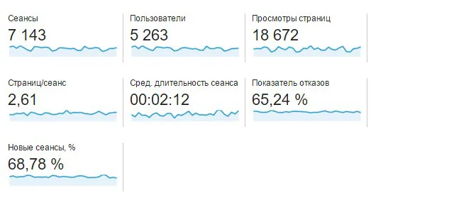
В представленной ниже таблице приведен пример использования спарклайнов для сравнения каналов трафика. Если подать эту информацию в виде классических диаграмм, они займут достаточно большой участок рабочего листа и тяжело будет сопоставить, какой строке данных соответствует конкретная диаграмма.
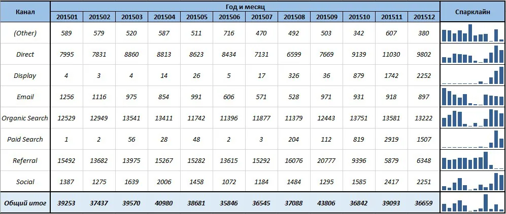
Как построить спарклайны в Excel
Спарклайны появились в Excel 2010, поэтому в более старой версии этого редактора электронных таблиц не удастся построить мини-диаграммы. Excel поддерживает три типа спарклайнов:
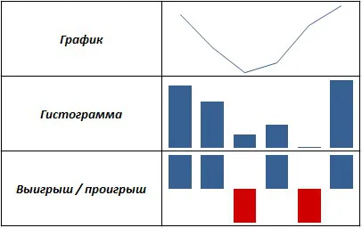
Создавать спарклайны в Excel легко. 1. Для начала необходимо вставить таблицу данных. Если у вас еще нет набора данных для визуализации, можете скачать этот csv файл и строить спарклайны на его основе. 2. Далее перейдем на вкладку «Вставка», где находится группа «Спарклайны».
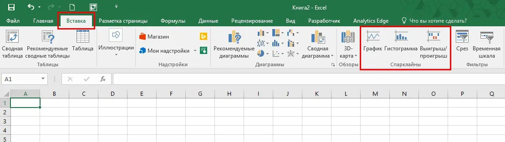
Построим, для примера, спарклайн-гистограмму, которая будет отображать динамику изменения количества сеансов по различным группам каналов трафика. Для этого жмем кнопку «Гистрограмма», которая находится в группе «Спарклайны». 3. В открывшемся диалоговом окне «Создание спарклайнов» указываем диапазон данных (в нашем случае выбираем ячейки B2:M10, именно в них содержится информация об объеме трафика). В поле «Диапазон расположения» прописываем, куда поместить спарклайны. Для отображения мини-графиков наиболее удачно подходит диапазон N2:N10.
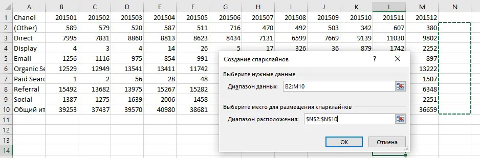
- После нажатия «OK» в диапазон N2:N10 будут встроены спарклайны, отражающие данные в ячейках B2:M10. Также в ленте активируется новая вкладка «Работа со спарклайнами» — «Конструктор», с ее помощью можно изменить параметры диаграмм.
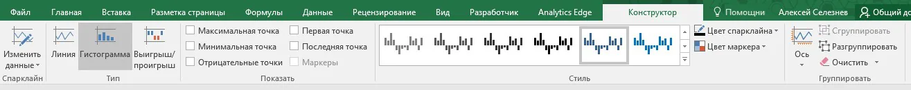
4.1. С помощью команд в группе «Спарклайны» можно изменить диапазон данных, на основе которых построены мини-графики, и место расположения визуализаций. 4.2. Группа команд «Тип» используется, когда необходимо изменить тип спарклайна. Например, мы построили гистограмму, а хотим поменять на график. 4.3. Группа «Показать» дает возможность отметить на спарклайне максимальную и минимальную точку, выделить первое и последнее значение, показать другим цветом отрицательные значения, а также проставить маркеры, если вы используете спарклайн с типом «Линия». 4.4. Группа «Стиль» содержит набор из 36 готовых стилей спарклайнов, при этом любой из них можно изменять на свое усмотрение, используя команды «Цвет спарклайна» и «Цвет маркера».
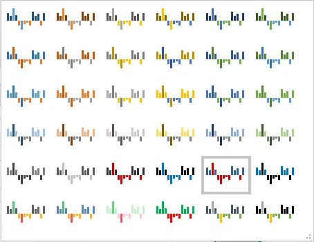
4.5. Группа команд «Группировать» позволяет изменять масштаб и видимость оси для каждого спарклайна, а также группировать и разгруппировывать мини-графики.
Как построить спарклайн в таблицах Google
Процесс построения спарклайнов в таблицах Google несколько сложнее, чем в Excel, но по функциональности идентичный. При построении диаграмм в Google Spreadsheets вам доступен тип «Спарклайн». Но это не то, что нам надо. На самом деле это всего лишь тип диаграммы, который позволяет добавить много графиков, но разместить их в одной конкретной ячейке нельзя.
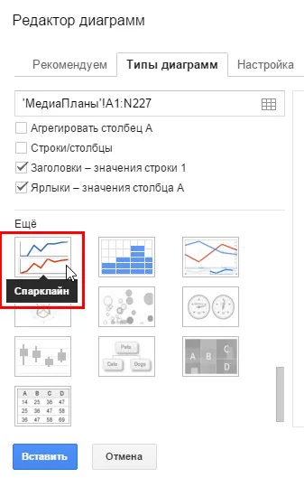
Аналог спарклайнов, описанных в этой статье, в таблицах Google можно построить с помощью функции SPARKLINE, относящейся к группе функций Google. Синтаксис функции SPARKLINE:
SPARKLINE(данные, [опции])
Где:
- данные — диапазон или массив, содержащий данные для построения спарклайна;
- опции — диапазон или массив, содержащий данные о различных параметрах спарклайна.
Пример использования:
=SPARKLINE(A1:F1) =SPARKLINE(A2:E2,A4:B5) =SPARKLINE(A1:A5, {«charttype», «column» / «axis», true / «axiscolor», «red»})
Данные и опции могут как располагаться на диапазоне рабочего листа, так и описываться в виде массива. Как правило, данные удобнее использовать, когда они расположены на рабочем листе, а опции — прописывать в виде массива внутри функции.
Что такое массив и как с ним работать
Массив — это виртуальная таблица, которая содержит строки и столбцы.
Массив всегда описывается внутри фигурных скобок, при этом необходимо соблюдать следующую пунктуацию:
- обратная косая черта «/» разделяет столбцы. Например, {1 / A}. Число 1 будет находится в правой левой ячейке массива, буква «A» в ячейке справа. Так мы описали диапазон, содержащий два столбца и одну строку.
- точка с запятой «;» используется для перехода на следующую строку. Возьмем {1;A}. Этот массив будет состоять из одного столбца и двух строк, в первой строке будет содержаться значение 1, во второй строке буква «A».
Пример подходит для описания массива, если у вас российские региональные настройки. Для тех, у кого по умолчанию установлены американские настройки, для разделения столбцов будет использоваться запятая. Теперь разберемся с опциями, доступными для каждого типа спарклайнов. Первый и, наверное, самый важный параметр — это Charttype. С его помощью вы можете задать один из четырех доступных типов диаграмм:
- bar — гистограмма;
- column — столбчатая диаграмма;
- line — график (значение по умолчанию);
- winloss — выигрыш / проигрыш.
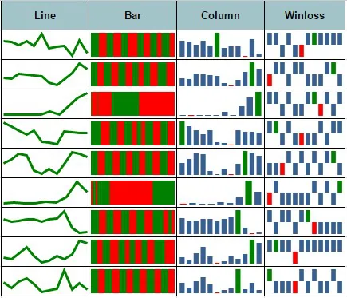
Теперь рассмотрим дополнительные параметры, доступные для каждого типа диаграмм. Параметры линейных графиков (line):
- xmin — задает минимальное значение по горизонтальной оси, поддерживает значения true и false;
- xmax — задает максимальное значение по горизонтальной оси, поддерживает значения true и false;
- ymin — задает минимальное значение по вертикальной оси, поддерживает значения true и false;
- ymax — задает максимальное значение по вертикальной оси, поддерживает значения true и false;
- color — задает цвет линии, поддерживает названия цветов на английском языке, например red, green, black;
- empty — определяет, как отображать на графике пустые ячейки, принимает значение zero. В этом случае пустым ячейкам будет присвоено значение 0, и ignore в случае, если вы хотите пропускать пустые ячейки и не выводить их на графике;
- nan — задает значения для ячеек с нечисловыми данными, принимает значения convert — для преобразования текста в число, применяется в случае, если число в ячейке сохранено как текст, ignore — чтобы не учитывать текстовые значения;
- rtl — с помощью этого параметра вы можете отобразить диаграмму справа налево, принимает значения true и false;
- linewidth — задает толщину линии, принимает числовое значение.
Пример спарклайна типа «line»:
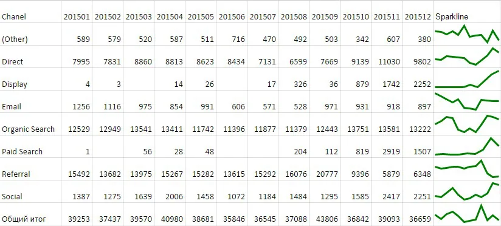
Пример формулы для спарклайна с типом «line»:
=SPARKLINE(B2:M2;{“charttype” \ “line”;”color” \ “green” ; “empty” \ “ignore”; “linewidth” \ 3})
Параметры для гистограмм (bar):
- max — задает максимальное значение по горизонтальной оси;
- color1 — задает первый цвет столбцов, в качестве значений принимает название цветов на английском языке;
- color2 — задает второй цвет столбцов, в качестве значений принимает название цветов на английском языке;
- empty — определяет, как отображать на графике пустые ячейки, принимает значения zero — в этом случае пустым ячейкам будет присвоено значение 0, и ignore, если вы хотите пропускать пустые ячейки и не выводить их на графике;
- nan — задает значения для ячеек с нечисловыми данными, принимает значения convert — для преобразования текста в число, применяется в случае, если число в ячейке сохранено как текст, ignore для того, чтобы не учитывать текстовые значения;
- rtl — с помощью этого параметра вы можете отображать диаграмму справа налево, принимает значения true и false.
Пример спарклайна типа «bar»:
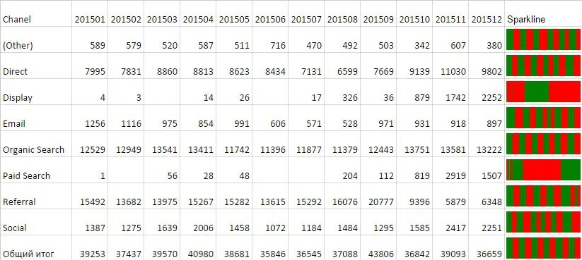
Пример формулы для спарклайна с типом «bar»:
=SPARKLINE(B2:M2;{“charttype” \ “bar”;”color1″ \ “green” ; “color2” \ “red”})
Параметры для столбчатой диаграммы и для диаграммы выигрыш / проигрыш (Column, Winloss):
- color — устанавливает цвет столбцов диаграммы, принимает в качестве значения название цвета на английском языке;
- lowcolor — устанавливает цвет столбца, содержащего минимальное значение, принимает в качестве значения название цвета на английском языке;
- highcolor — устанавливает цвет столбца, содержащего максимальное значение;
- firstcolor — устанавливает цвет первого столбца, принимает в качестве значения название цвета на английском языке;
- lastcolor — устанавливает цвет последнего столбца, принимает в качестве значения название цвета на английском языке;
- negcolor — устанавливает цвет столбцов, содержащих негативные значения, принимает в качестве значения название цвета на английском языке;
- empty — определяет, как отображать на графике пустые ячейки, принимает значение zero — в этом случае пустым ячейкам будет присвоено значение 0, и ignore в случае, если вы хотите пропускать пустые ячейки и не выводить их на графике;
- nan — задает значения для ячеек с нечисловыми данными, принимает значение convert — для преобразования текста в число, если число в ячейке сохранено как текст, ignore — для того, чтобы не учитывать текстовые значения;
- axis — включает и выключает отображение оси, принимает значения true и false;
- axiscolor — определяет цвет шкалы, если параметр axis имеет значение true, в качестве значения принимает название цвета на английском языке red, green, black;
- ymin — задает минимальное значение по вертикальной оси, поддерживает значения true и false;
- ymax — задает максимальное значение по вертикальной оси, поддерживает значения true и false;
- rtl — с помощью этого параметра вы можете отображать диаграмму справа налево, принимает значения true и false.
Пример спарклайна типа «column»:
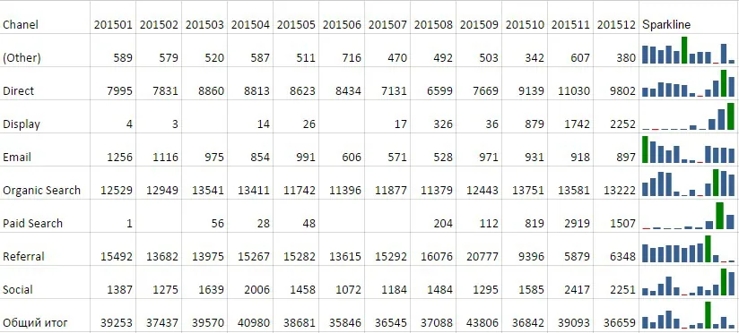
Пример формулы для спарклайна с типом «column»:
=SPARKLINE(B2:M2;{“charttype” \ “column”;”axis” \ true ; “axiscolor” \ “red” ; “highcolor” \ “green” ; “lowcolor” \ “red”})
Пример спарклайна типа «winloss»:
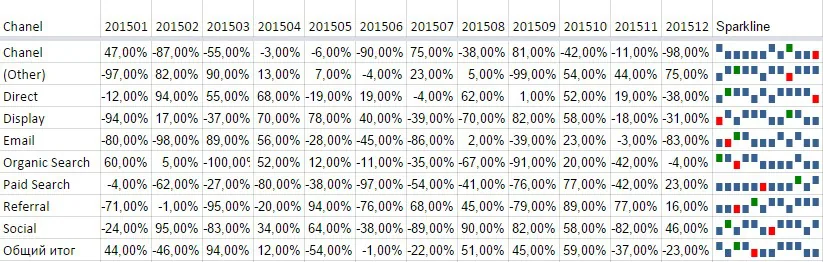
Пример формулы для спарклайна с типом «winloss»:
=SPARKLINE(B2:M2;{“charttype” \ “winloss”; “highcolor” \ “green” ; “lowcolor” \ “red”})
Как я говорил ранее, необязательно описывать параметры в формуле в виде массива. Можно описать параметры спарклайна на рабочем листе, а в качестве второго аргумента функции SPARKLINE просто указать ссылку на массив, в котором находится описание параметров.
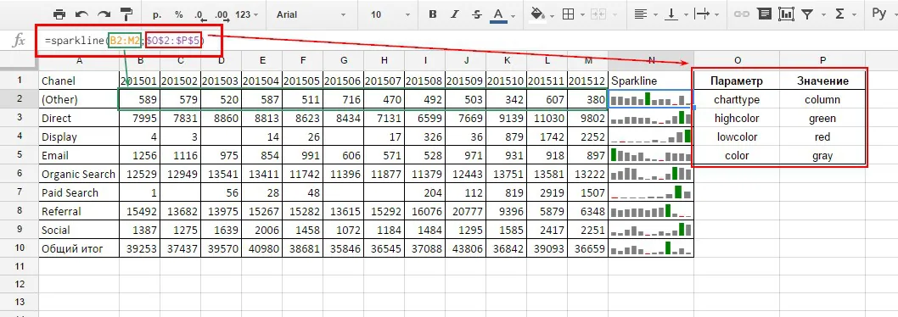
В ячейке N2 введена формула «=sparkline(B2:M2;$O$2:$P$5)». В качестве первого параметра прописан диапазон B2:M2, в котором содержится информация о данных для визуализации с помощью спарклайна. В качестве второго параметра указана ссылка на диапазон O2:P5, где содержится описание параметров спарклайна. В данном случае там будут следующие параметры:
- тип спарклайна — столбчатая диаграмма;
- цвет максимального значения — зеленый;
- цвет минимального значения — красный;
- цвет столбцов — серый.
Используя эти рекомендации, вы сможете легко создавать спарклайны в таблицах Google.
Выводы
Спарклайны — это вспомогательный элемент в работе с таблицами. Подобрав нужный тип спарклайна, вы сможете анализировать информацию с помощью емких и компактных визуализаций. Создать мини-диаграмму можно:
- в Excel — все настройки доступны в интерфейсе;
- в таблицах Google — нужно разобраться с функцией SPARKLINE и основными параметрами значений.
Научившись работать со спарклайнами, вы не только сэкономите пространство на рабочем листе, но и время вашего шефа, потраченное на изучение данных.